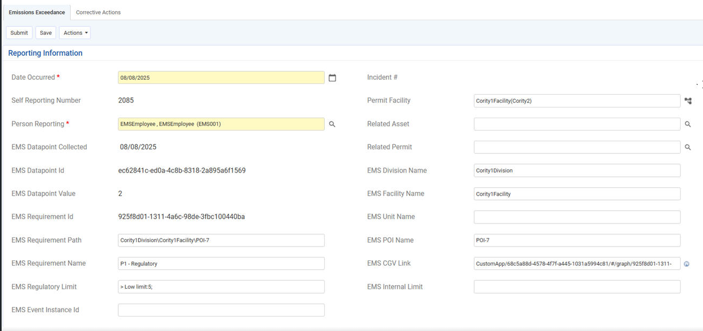

Create an Event in Core (GX2) from Advanced Calculations (EMS) Limit Exceedances
When a regulatory or internal limit is exceeded, you can choose to automatically create an Event in Core (GX2) instead of an Advanced Calculations (EMS) task.
To do this, your System Model must be connected to a Core (GX2) system and the Advanced Calculations (EMS) Hierarchy must be configured.
Create an Event from Advanced Calculations (EMS) Task Limits
To set the regulatory and/or internal limits for a requirement:
In Advanced Calculations (EMS), on the properties form for the requirement, expand the Limit History section by clicking the plus sign (+) in the Limits History bar and set the Regulatory Limits as required. For more information, see Setting Regulatory Limits.
From the GX2 Finding/Event Report list, choose the Event you want to create. For more information on event reports in Core (GX2), see Reporting an Event in The Cority User Guide.
When the limit is exceeded, in Core (GX2), an Event is created.
Create an Event from Advanced Calculations (EMS) Event Log
You can create an Event in Core (GX2) from the Advanced Calculations (EMS) Events Log. When you set up an Event Log for a POI, it can be used to monitor all the requirements within it.
Select the parent object in the system model tree or in the Applicable Requirements view, right click and choose New > Event Log.
Choose the appropriate Event Template from the selection list. The Event Template contains the data fields that are available for entry when an event occurs. The Event Template must be previously defined. See Event Templates.
Select the Data Entry Type.
Select Automatic for automatically triggered events.
Select Manual for Event Logs in which entries will be created manually as needed.
Optionally, you may select a Custom Field Template to apply. See Custom Field Templates. (The fields on a Custom Field Template will be seen on the Event Log properties, but will not be seen on the events.)
Click Continue.
Complete the form for creating a new Event Log. See Create an Event Log. To track limits, the Requirement Type must be Numeric.
Choose an event from the GX2 Event Report Type list to be automatically created. For more information on event reports in Core (GX2), see Reporting an Event in The Cority User Guide.
When the Event Log triggers, the Event in Core (GX2) will be created.
Event Report
The Event will be assigned to the location which your Advanced Calculations (EMS) Hierarchy was configured and the additional Advanced Calculations (EMS) fields will be populated.

Once the Event is created, you can open the CalcGraph Visualizer to view the data and either close the event or create a Finding/Action, or Incident.